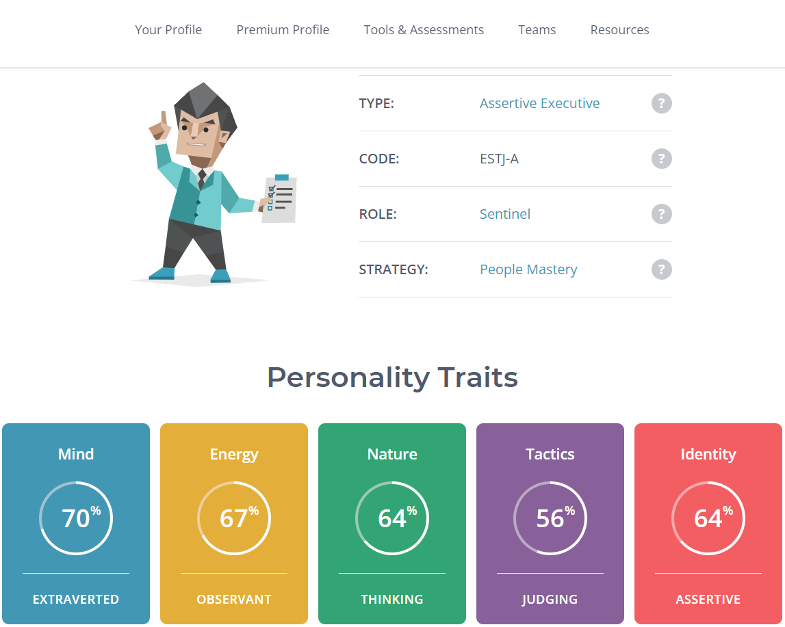
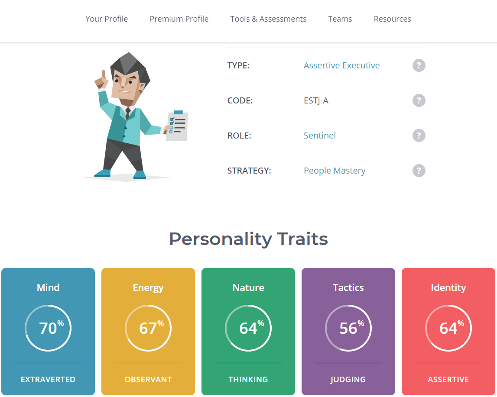

My name is Matthew Bradley and 3 months ago I made the decision to completely change my career. I am currently a supervisor within my families business, specialising in road infrastructure. This role has taken me across Australia and allowed me to meet people across all walks of life. I have been very fortunate with my progression but I believe it is time to move into a field I am passionate about. IT has always been a challenge that interests me. I have a head strong personality, great problem solving skills and a determination to make things work.
I live with my partner Pip and our 2 dogs, Boots; a Dachshund x German Pointer and the chunky one in the photo is my Labrador Minnie. Our weekends mostly consist of taking the dogs on adventures, we love 4WDing on the beach. Pip and myself have been together for 9 years and have been lucky enough to travel Europe and the United Kingdom several times. Our goal is to see a lot more of the world together.
if you need to contact me my Email is S3934467@student.rmit.com.au
My interest in IT stems from my passion for efficiency and getting systems to work in an easy and logical manner. I always have my eye on the latest and greatest in systems and tech.
The definitive moment that really pulled me into the world of tech would be 12 months ago when my employer decided to over-haul all of our current forms and procedures and go digital, which required someone to design them, I volunteered and absolutely loved the process. The system used is Gocanvas which requires no coding required and I found it was very simple to use. As mentioned, I genuinely enjoyed the process but I still felt a frustration that I was restricted to the limits of the APP. I wanted to gain the knowledge to be able to perfect the system and to make it as efficient as possible. Later that week I started to research what was required to turn this passion and interest into a career.
I never thought it was possible to study whist at work, but with some research I came across Open Universities Australia which lead me to RMIT. With the study method being 100% online this is going to be my best chance to move in the direction of my desired career.
I am currently drawn to vast field of cyber security and robotics but my main focus is to gather as much information in the wide landscape of Information Technology, its many branches and careers, and to learn firsthand from people who currently work in the industry.


The exampled position is a Software Engineer for a health and wellness group. The position is calling for engineers specialising in front and back end, or full-stack development. The role will revolve around software development; such as apps, building and improving websites, and also providing recommendations for future-state plans and improvements. The position will also require testing apps, websites and modifications.
The above position draws my attention as it is not exclusively a Tech company but has an internal IT department, which lends to more experience across different areas of a business. I am also drawn to this position due to understanding of their current product (fitness and gym information app) and clientele. I understand as a consumer what is needed for this particular app. This is a position I feel would have a high need for problem solving and continual improvement. This is an environment I strive in as I am always looking to be more efficient in various aspects of my day, health and fitness included.
The experience criteria for the position is quite expansive. The position will manage net.framework (backend); this will require experience in languages such as Python and Java. HTML, Javascript and CSS experience will be a must for the front end development. Previous knowledge and experience in Azure (the chosen Cloud Storage) is preferable. Well-developed collaboration skills are also favourable as Scrum will be used to utilise the team.
My current career and corresponding skills are focused on preparation and organisation of a team and materials needed to complete tasks, whilst also dealing with client’s needs, expectations and parameters. This has taught me much needed skills regarding time management and the prioritisation of tasks. Although my field is currently not within the IT sector I do believe my current skill set will be very applicable in any field, particularly tech and more specifically this particular role.
Due to my limited skill set in coding and previous experience, I am currently not qualified for this position. However, the skills I gain while completing my Degree of Information Technology will be the first step in gaining the appropriate knowledge before completing a Bachelor of Computer Science. My future plan involves completion of Degree of Information Technology, gaining experience and employment in the technology landscape before furthering my education in the above mentioned Bachelor’s degree. I believe all of these steps will further my succession in a position similar as the one outlined.

 

The outlined results shown by the 16 personalities test, was not a surprise. I have always been assertive in my day-to-day dealings, my current role requires me to lead from the front and I am generally a pragmatic person. I was however, surprised by the results of the Learning Style Test and the evidenced Tactile Learning Trait. Only 5% of people fall into this category and had previously considered myself as a visual learner, this has encouraged me to reconsider my learning style. I have never considered myself a creative person and the results of the Creativity Test has cemented this perception. As a very practical and straight forward thinker I generally prefer functionality over aesthetics.
Whilst these tests are open to interpretation they highlight areas of strength and weakness’ which will dictate how I will work with and eventually put together a team. As an Assertive Executive personality type I am highly practical but also quite emotionless when making decisions, I will need to surround myself with people who are more empathetic. As a tactical learner, as evidenced in the Learning Styles Test, I learn by doing. This learning style will lend itself to a more practical style, so it will be imperative to surround myself with people who have greater knowledge than myself in areas I am not across. As creativity is not my strong suit, again, I will need to surround myself with people whose strength’s lean to this area. I am far more practical and I will need to be in a team of people who balance this practicality with empathy and creativity.
Subscriptions are a part of modern life. Most Australian families have had a paid subscription at one point and with the global pandemic that has increased. Business Insider Australia estimates Australians have more than 37 million subscriptions to entertainment services, with that number to surge (Business Insider Australia 2020). As one of the many who have various subscriptions across multiple platforms, I find it difficult to track and manage these accounts. In terms of budgeting and maintaining, I believe there is a market for an App based product to facilitate the management of all subscriptions. I want to create a space that allows a user to view, cancel, continue, pause, and resume all of their subscriptions in one place.
The chief principal for the app would be convenience. With entertainment sites like Netflix, Stan, Foxtel, Amazon Prime increasing viewership by 1.5 million each in 2020 (Roy Morgan 2021) the demand for a streamlined database where subscribers are able to manage their account in one place. The platform would allow a user to create an account that allows you to enter multiple emails that have been linked to subscriptions. There is also room for development within the project, instead of just managing subscriptions; there may be availability in the future to directly signup to subscription based platforms directly from the app.
The product will rely on the user entering their email and password linked to each subscription service. This will lead to a view where all subscriptions will be listed as well as their relevant information. The view will allow users to see active, cancelled and paused subscriptions. There will be multiple options depending on the status of the subscription; for example:
Where applicable, the program will also advise users of the next billing cycle. will be and will also provide a total cost summary of all subscriptions. This will allow users to budget their entertainment without have to log into each subscriptions profile. It allows for ease when managing monthly subscriptions that tend to be billed in various parts of the month. There will also be significant investment into troubleshooting, specifically users of the older population. As the future state of the project will allow in-app signups for all applicable subscriptions, this, again, will mitigate the confusion of remembering, usernames, passwords, billing cycles etc. I believe this will benefit those who aren’t as tech savvy as the younger generation. Those who are struggling with the program will be able to find Troubleshooting and FAQ’s within the app that relates to each major subscriptions based company (Amazon Prime, STAN, Binge ect).
As mentioned, the project will eventually allow users to sign up to additional subscriptions directly from the app. A separate section of the app will show a list of ‘recommended’ subscriptions based on ones currently active. Once a selection is made it will direct users to a new page where their applicable details will be pre-entered (names, DOB, email address’, possible passwords ect). These details can either be confirmed or edited. This again, leads into the apps core philosophy of ease and being a ‘one-stop-shop’ for maintenance and management of multiple subscriptions. Once ready to continue; the user will then be directed to the official webpage of the subscription wanting to be activated, the aforementioned details will be pre-populated, with only payment details needing confirmation. Once the activation is complete, the user will then be diverted back to the app and their new subscription will be listed as Active.
Possible barricades the project might encounter will include unresponsiveness from the subscriptions company. For example, Netflix may not be willing to yield information privy to their users. However, it does give companies further access to those who are not currently subscribers by being listed in the ‘Recommended Subscriptions’.
As the principal priority of the project will be the User Interface; HTML, JavaScript, CSS, will be used in the front-end development of the project, providing content features and design aspects. As this is a dynamic project, various frameworks will be a vital tool in the development of the application. Further knowledge and investigation into the specific frameworks needed will be the primary requirement for the project. Testing and troubleshooting of the project before initial release is paramount. As the driving force of the project is simplicity and ease, an allocation of qualified App Testers is necessary to ensure a smooth platform when crossing between frameworks. Multiple tests of Security will be a requirement due to information we are requesting users provide (ie Names, DOBs, emails ect).
A degree in Computer Science is fundamental in App development. In-depth knowledge of coding languages is also required for the project. The only hardware required will be rudimentary equipment necessary for coding. Considering the sensitive information the project will be obtaining and reserving further education surrounding Ethnical Hacking is paramount.
There is multiple gaps in my comprehension on how I will go about fulfilling this kind of project; but surrounding myself in further education and the knowledge of others, hopefully I can bridge this gap.
The ideal outcome of the project will show the proven effects of the app; it will hopefully provide the opportunity to mitigate the need to remember multiple log-ins, passwords; and various billing dates for the future users. Not to mention being user friendly for those who do not have superior tech savviness. It will also have an impact on how companies communicate with their subscriber base; it will provide a new avenue for advertisement and new subscribers. Further cementing the projects core philosophy: being a one-stop-shop for management and maintenance of multiple subscriptions.